利用顶叶与顶芯位置相对的结构关联性做双目标检测，配合 DWConv + C3_Faster 轻量化主干、CA 位置注意力、颈部 C3_RFCBAMConv 与 SN-IoU 损失，服务密植棉田的精准机械打顶。
利用两者位置相对的结构关联性同时建模：顶芯未遮挡时直接识别，完全遮挡时由顶叶间接确定打顶位置。
DWConv 与改进 C3_Faster 重设主干，第 7 层引入 CA 补位置信息；颈部第 13 层用 C3_RFCBAMConv 增强感受野注意力。
Shape-IoU 的形状尺度约束与 NWD-IoU 的尺度不敏感度量按 iou_ratio=0.8 融合，兼顾顶芽形状与小目标。
mAP@50 97.5%（+3.0 个百分点）· 顶芯准确率 92.4%（+3.9）· 召回率 95.0%（+8.0）· 参数量 3.9 M（-44%）· Jetson 部署 37 帧/s。
人工打顶强度大、成本高、效率低；化控打顶易引发药害与土壤残留；机械打顶以物理方式摘除顶芽，但精准识别顶芽是前提。
顶芯尺寸小、容易被遮挡，直接识别效果差；顶叶的形态、颜色、尺寸随棉株个体差异变化，易被其余展开叶干扰。
通用检测模型在密植棉田中对小而遮挡的顶芯漏检率高、精度低，参数量与计算成本也难以匹配边缘设备算力。
缺口收窄为：暂未有工作在同一检测框架内同时利用顶叶与顶芯位置相对的结构关联性压低顶芯漏检，并兼顾模型轻量化与边缘端实时推理。
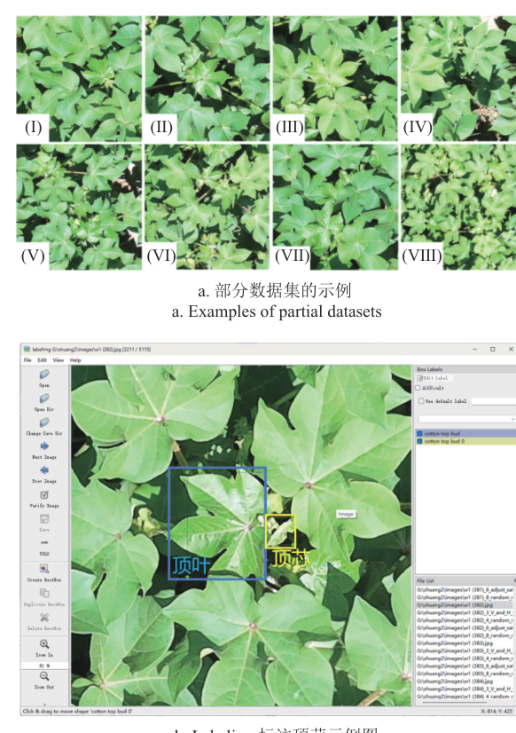
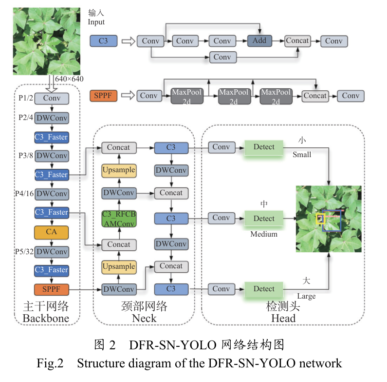
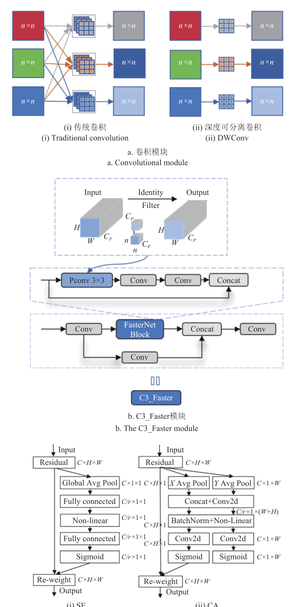
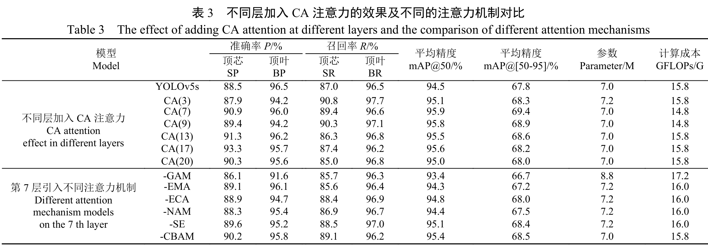
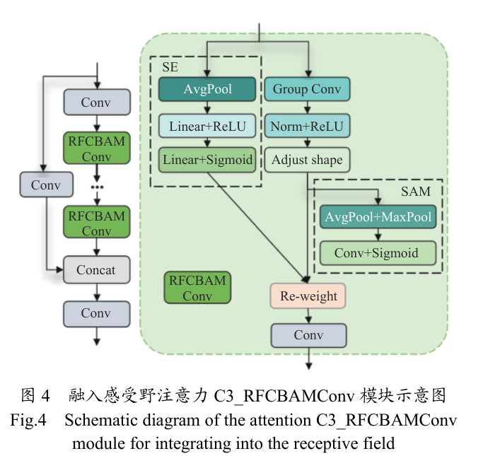
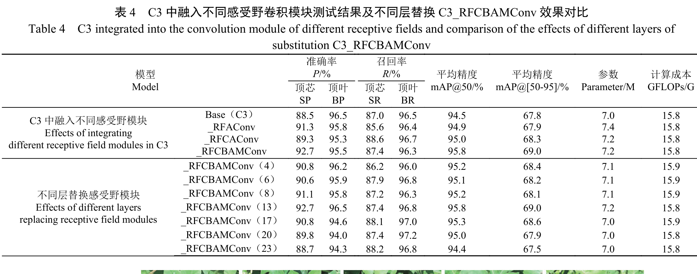
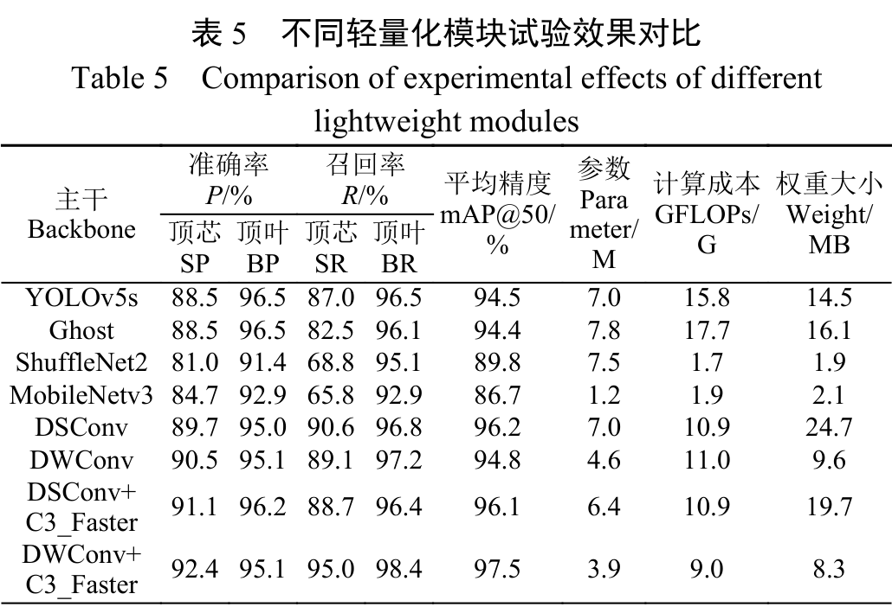
Loss = iou_ratio · (1−LNWD)mean + (1−iou_ratio) · (1−LShape)mean
iou_ratio = 0.8；以 Shape-IoU 约束形状尺度，用 NWD-IoU 稳住小目标。
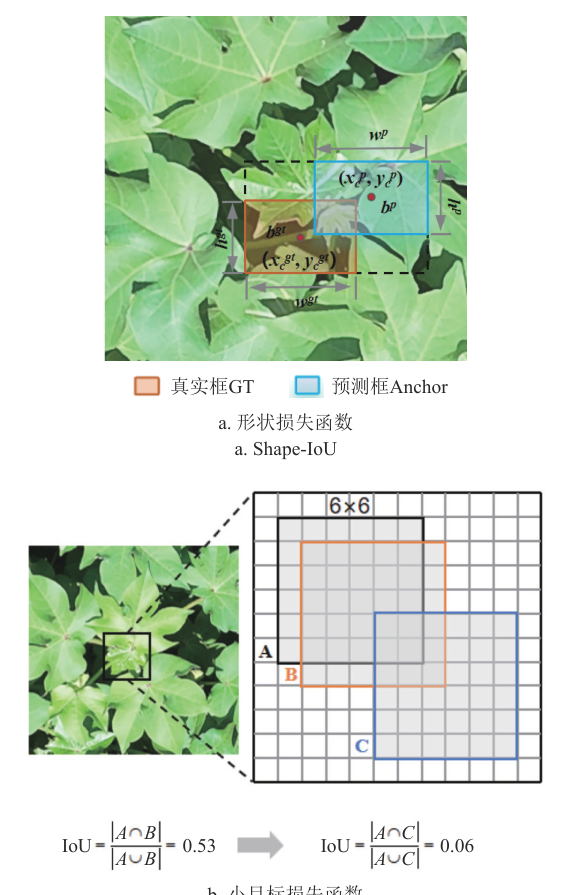
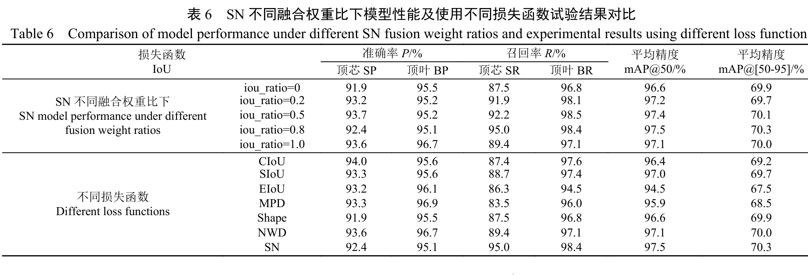
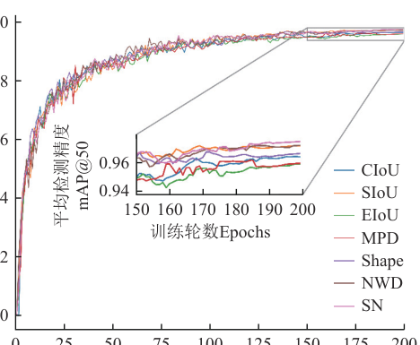
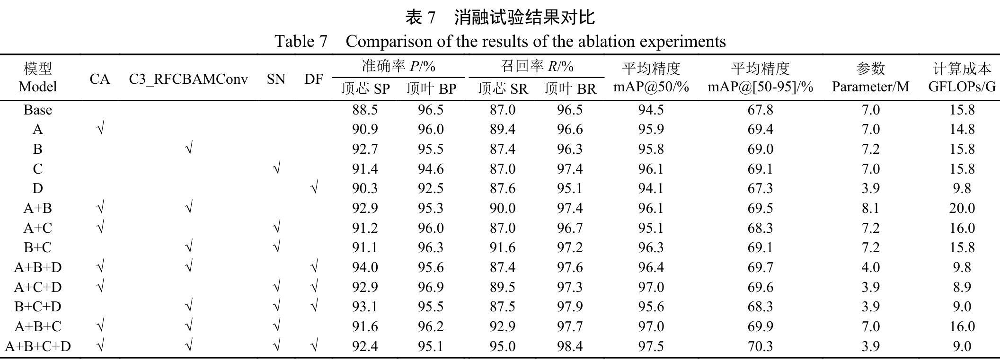
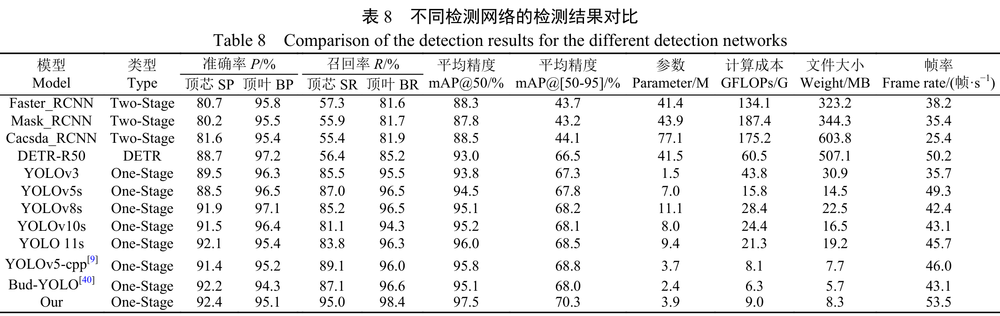
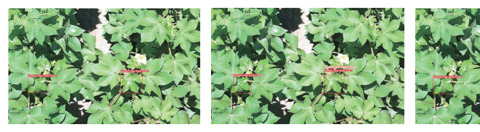
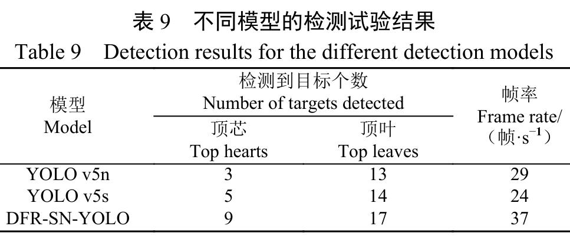
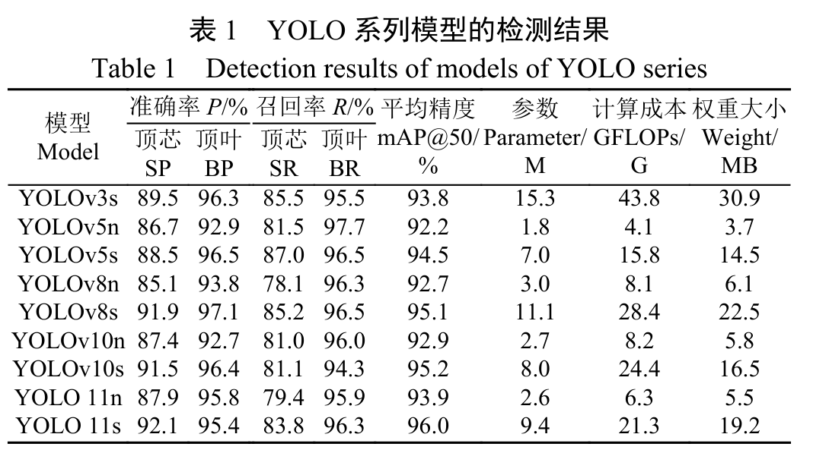
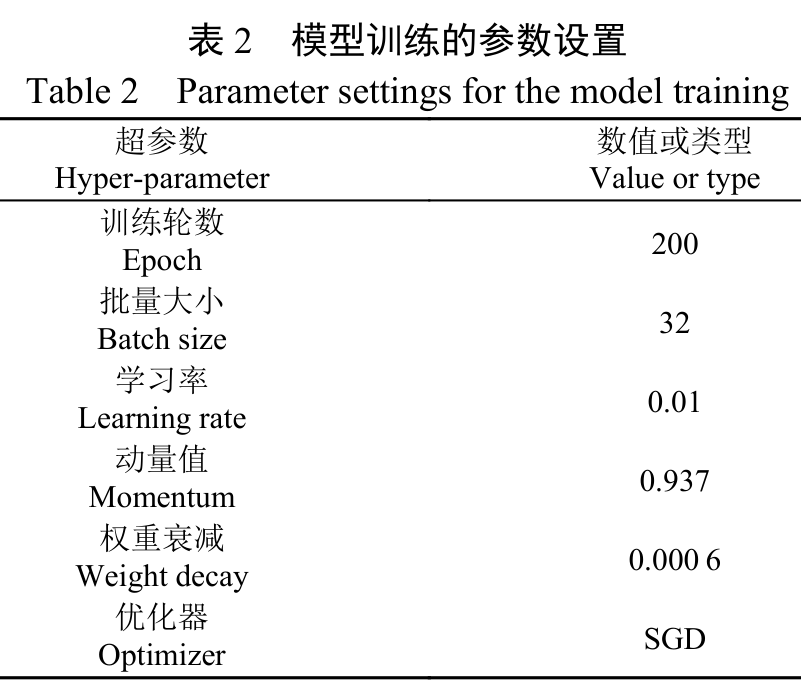
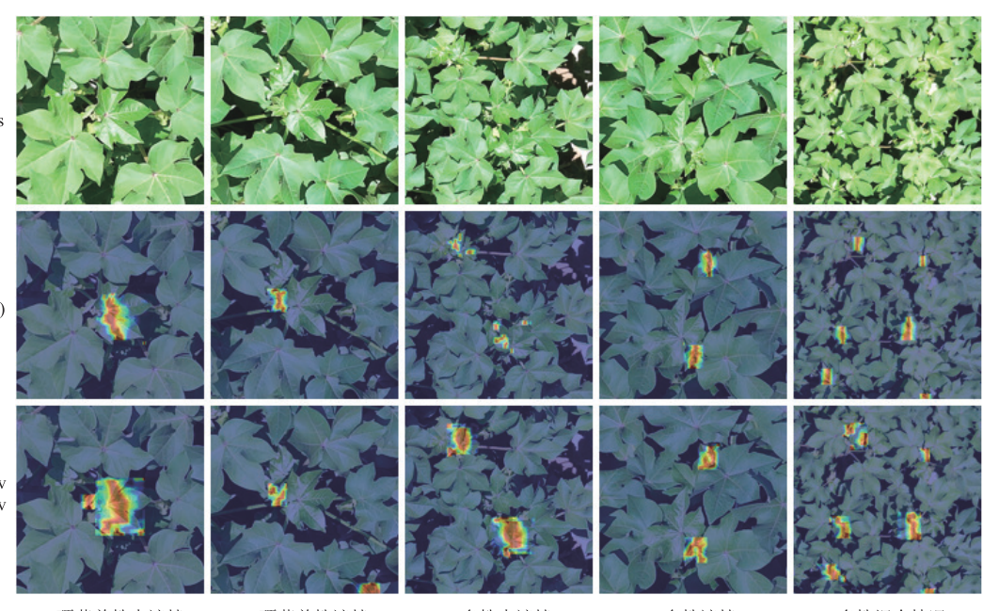
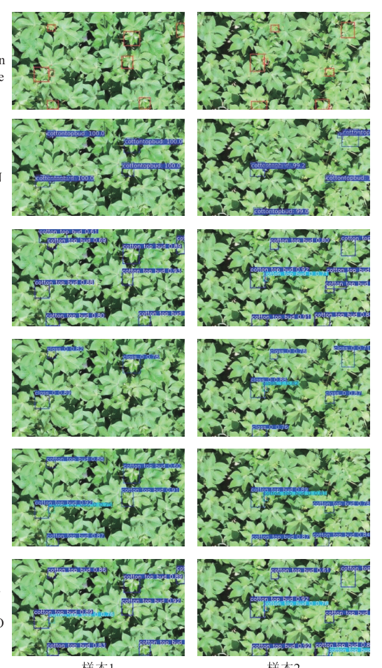
利用顶叶与顶芯位置相对的结构关联性，将两者同时建模为检测目标并配合 CA 位置注意力，使顶芯召回率提升到 95.0%，有效缓解密植棉田的顶芯漏检问题。
将 Shape-IoU 的形状尺度约束与 NWD-IoU 的尺度不敏感度量按权重比融合，是小目标边界框回归中可供参考的损失设计范式。
覆盖注意力插入位置、轻量化主干选型、损失权重比消融与 Jetson Orin Nano 边缘部署，37 帧/s 的推理速度说服力强。